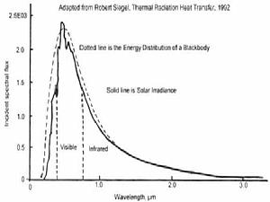
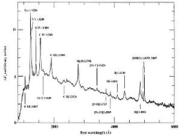
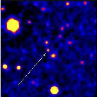
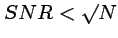
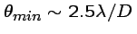
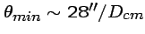
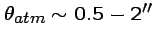

ASTR 511 (O'Connell) Lecture Notes
UVOIR ASTRONOMY
{kind=link}
Southern Milky Way from CTIO
I. WHY UVOIR?
A. Definition
-
UVOIR = the "UV, Optical, Near-Infrared" region of the EM spectrum
- Shortest wavelength: 912 Å (91.2 nm) --- the Lyman edge of H I; the interstellar medium is opaque for hundreds of Å below this point
- Longest wavelength: ~3 µ (3000 nm) --- serious H2O absorption in Earth's atmosphere above this point.
B. Uniqueness
- Best developed instrumentation; best understood astrophysically
- Highest density of astrophysical information
- Most of the important features of the universe, from planets and stars to the interstellar medium, dark matter, and clusters of galaxies, were first recognized in the UVOIR bands.
- The UVOIR provides prime diagnostics on most astrophysical phenomena but especially on the two most important physical tracers:
|
STARS

|
PLASMAS (to 105K)

|
{kind=link}
{kind=link}
{kind=link}
{kind=link}
| ===> UVOIR observations/identifications are almost always prerequisites to a thorough understanding of cosmic sources in other EM bands. |
|
 First identification of a GRB source. |
{kind=link}
II. KINDS OF UVOIR OBSERVATIONS
- Imaging: distribution of EM energy on the celestial sphere
- Astrometry : a sub-class of imaging: precision
measures of positions & motions
- Spectral Energy Distributions (SEDs): distribution of EM
energy with frequency
- Photometry (low resolution)
- Spectroscopy (higher resolution)
- Photometry (low resolution)
- Variability
- Polarimetry
III. PRIORITY OF OBSERVATIONS IN ASTRONOMY
Astronomy is driven more by new observational discoveries than by fundamental interpretive insights (i.e. theory). The development of astrophysics has been shaped by observations in about 3/4 of instances. Few important astronomical discoveries were predicted; many were actually accidental Examples of accidental discoveries: (the technique/original motivation is given in parentheses)- Uranus (visual telescopic sky-scan)
- Expansion of the universe (faint galaxy spectroscopic survey)
- Pulsars (radio scintillation observations)
- Supermassive black holes/AGN's (radio surveys, optical spectroscopic surveys)
- Although nuclear activity had been recognized since
the 1940's (Seyfert), its prevalence and significance was not understood until
radio observations in the 1950's-60's, especially of the compact
Quasi Stellar Objects.
- Large scale structure (redshift surveys aimed at measuring the galaxy luminosity function)
- Dark matter in spiral galaxies: flat rotation curves
(optical/radio spectroscopy)
- X-ray emitting gas in clusters of galaxies (early X-ray sky surveys)
- Gamma ray bursts (military satellites looking for clandestine nuclear tests)
- Extra-solar planets (optical spectroscopic monitoring)
- There was a general expectation that these existed,
based on the Copernican Principle, for example. But theoreticians
predicted that massive planets could exist only at large distances
from parent stars, implying 5-year or longer survey periods. The
first planetary-sized bodies orbiting another star were found
accidentally by radio observations of a pulsar (Wolszczan & Frail,
1992). More normal exoplanets were first securely identified through
optical Doppler-shift surveys of bright stars (Mayor & Queloz,
1995).
- High redshift
evolution of galaxies: e.g. "the Butcher-Oemler effect"; discovery of
"cosmic noon"
(deep optical imaging)
- HST
contributions in this area---e.g. the Hubble Deep Field (1996)---were
actually hindered by theoretical prejudice that distant galaxies would
be too faint to detect. The HDF deep pencil-beam survey
was delayed by 5 years.
- Dark energy (deep supernova surveys to study cosmic curvature)
{kind=link}
{kind=link}
- Neptune (Leverrier, Adams predictions from Newtonian dynamics)
- General relativistic distortion of space-time near Sun (Eddington expedition, 1919)
- 21 cm line of HI (Van de Hulst 1944; Ewen & Purcell 1951)
- Helioseismology
- Cosmic microwave background
- Predicted in 1948 by Gamow, Alpher, & Herman.
The actual discovery by Penzias & Wilson 16 years later was
accidental, but a second team led by Dicke was preparing a deliberate
search and would have been successful.
- Gravitational waves (predicted 1916 by Einstein from his general theory of relativity):
-
Indirect detection of gravitational waves was made in a binary pulsar
system by Hulse and Taylor (1974). Direct detection was extraordinarily
difficult but accomplished by LIGO in 2015.
- Helioseismology
- What's meaningful? What's not? What's real vs. what's noise?
How big are systematic errors?
What's interesting? What's right?
-
Example 1: what is this? how was it made?
what do the colors mean?
{kind=link}
Example 2: what does this diagram test? what important physical implications?
{kind=link}
Example 3: what causes the scatter in this diagram?
{kind=link}
Example 4: is there a statistically meaningful result here? what is it?
{kind=link}
Example 5: classic example of systematic error
{kind=link}
Example 6: discovery of the year or statistical fluke?
{kind=link}
{kind=link}
{kind=link}
IV. HISTORICAL LESSON: TECHNOLOGY DRIVES DISCOVERY
Most groundbreaking discoveries are enabled by new observational capabilities.- Local example: High Electron Mobility Transistor detectors from the NRAO Central Development Lab enabled the current generation of CMB microwave experiments
|
Mt. Wilson 100-in. Discovered external |
{kind=link}
|

|
- Sky surveys
- First: Hipparchus, 130 BC. Thousands since, many of them enabled by special purpose telescopes.
- Two most important in 20th century:
- Henry Draper Catalog [HD] (all-sky, stellar spectra) ===> stellar astrophysics.
- Palomar 48-in Schmidt Sky Survey [POSS] & southern counterparts (all-sky, deep imaging) ===> source for identification of all types of stars, clusters, nebulae, and extragalactic systems. Online version: Digitized Sky Survey.
- Large format, 2-D array detectors, coupled with the ability to store and manipulate huge digital data sets on computers, are driving the current explosion in imaging/spectroscopic sky surveys (e.g. 2dF, SDSS, PanSTARRS, 2MASS, LSST, and many others, often with cutie-pie names)
- Classification systems (e.g. HD stellar spectral classification, ca. 1890; Hubble galaxy classification, ca. 1920)
{kind=link}
V. FLUX MEASUREMENTS IN ASTRONOMY
A. Signal-to-Noise Ratio
- "Sensitivity"---i.e. the faintest source measurable---is not simply a matter of the size of the photon collector.
- It is instead a
signal-to-noise issue:
- SNR (or "S/N") = value measured / uncertainty in measure
- Depends on structure of source (point vs. extended), nature of the luminous background & surroundings, foreground absorption, telescope & instrument throughput, characteristics of detectors (quantum efficiency, noise)
- Fundamental limits are from photon statistics
-
, where N is number of detected source photons
{kind=link}
B. Typical SNR's in Astronomy:
- Some things are known exactly (SNR is infinite)
- The sun is a star
- Only one star interior to Earth's orbit
- No new elements are possible with fewer protons than uranium
- The sun is a star
- High precision measures: e.g. length of the AU; period of pulsars. SNR > 109.
- Measures of astronomical EM fluxes:
- Best precision (Kepler and TESS exoplanet transit missions): SNR
> 10000
-
Modest by lab standards! Problems: difficulty of
instrument calibration in the "field"; faintness of interesting sources.
- Typical "good" measures: SNR ~ 20-100
- Threshold detections: SNR ~ 5-10
- Best precision (Kepler and TESS exoplanet transit missions): SNR
> 10000
C. The Magnitude System
- "Magnitudes" are a conventional way of describing source brightnesses in UVOIR astronomy but one which is confusing for newcomers because of differing definitions and hence conversion to physical energy units. See Lectures 2 and 14.
D. Backgrounds
- Even when source fluxes are appreciable, detection can be inhibited
by luminous backgrounds, which reduce SNR.
These become important when:
-
(Background flux)resol-element ~ (Source flux)resol-element
- Diffuse backgrounds, examples:
-
UVOIR:
artificial light pollution + Earth's atmosphere + ecliptic scattered
sunlight + scattered Galactic light
Far IR: Earth's atmosphere + warm dust in the solar system and
interstellar "cirrus"
Radio: Cosmic Microwave Background
All: additional background generated by telescope or instruments
- Discrete source backgrounds, examples:
-
Exclusion zone around bright stars caused by scattered light within instrument
Source "confusion" caused by diffractive blending of multiple faint sources,
e.g. in star clusters or for faint,
distant radio galaxies.
{kind=link}
{kind=link}
{kind=link}
{kind=link}
{kind=link}
VI. LIMITS OF OBSERVATIONAL CAPABILITY
A. EM Wavelength Coverage
- There has been rapid expansion since 1950, facilitated by development of many different electronic detector technologies and space astronomy.
- The entire EM spectrum except for the extremes is now accessible at some level to astronomers.
{kind=link}
B. Point Source Sensitivity
-
Faintest UVOIR point source detected:
- Naked eye: 5-6 mag
- Galileo telescope (1610): 8-9 mag
- Palomar 5-m (1948): 21-22 mag (pg),
25-26 mag (CCD)
- Keck 10-m (1992): 27-28 mag
- HST (2.4-m in space, 1990): 29-31 mag
C. Spatial Resolution
- The fundamental limit is governed by diffraction in
telescopes and instruments: the minimum image diameter is given by:
-
 radians
- At 5500 Å,

- Inside Earth's atmosphere, turbulence strongly affects image diameter.
-
The resulting image blur & motion
is called "seeing", and typically yields:
-

- Best UVOIR images: HST, ~ 0.06" (~ a quarter at 90 km)
- Ground-based (8-m) single-aperture "adaptive optics" systems yield 0.05" over limited fields (in the near infra-red, but not for < 1 µ)
- Anticipated UVOIR interferometers: 0.001"
- Best overall resolution: very long baseline radio interferometry -- but limited to rare, high surface brightness radio sources. Best resolution to date (about 0.000020" at 1.3 mm wavelength) was achieved by the Event Horizon Telescope (2019-20).
{kind=link}
D. Spectral Resolution
- The theoretical maximum resolution is governed by diffraction in optical components, but the practical limit is set by photon rates. High resolution devices in astronomy are typically photon-starved (except for observations of the Sun).
- Source identification, surveys, and classification are typically done at low resolution (10-5000 Å)
- Physical analysis is done at moderate-to-high resolution (0.01-10 Å)
- Highest to date: ~ 0.001 Å
E. Other Properties: e.g. polarization, variability
-
Based on the new technologies supporting wide-field sky surveys for
variable or transient sources, "time domain astronomy" has become a
major specialty in the last twenty years. Examples are
Pan-STARRS, the Zwicky Transient Facility, and (in the coming decade)
the LSST.
F. Examples of Background-Induced Selection Effects
|
|
|
|
{kind=link}
{kind=link}
{kind=link}
{kind=link}
VII. NON-EM CONVEYORS OF COSMIC INFORMATION
Most astrophysical information is derived from the study of electromagnetic waves propagating over significant distances. However, there are several niches where important information is, or could be, conveyed by other means. For a list, click here.Related pages: References:
- LLM, Chapter 1
- Harwit, Cosmic Discovery [QB43.2.H37]
- "99 Things About the Last 100 Years of Astronomy," V. Trimble, Mercury, Nov-Dec 99, p. 17.
 Lecture Index
Lecture Index
|
 Next Lecture
Next Lecture
|
Last modified December 2020 by rwo
Text copyright © 2000-2020 Robert W. O'Connell. All rights reserved. These notes are intended for the private, noncommercial use of students enrolled in Astronomy 511 at the University of Virginia.